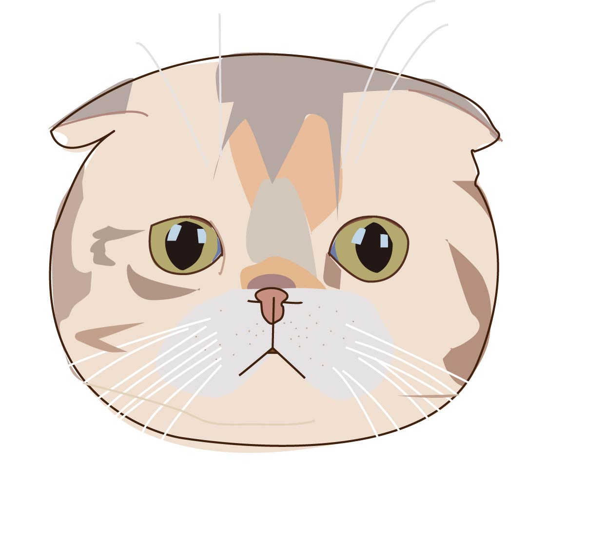

☞모찌블로그 바로가기☜
♡ 모찌의 blog 간단한 설명 ♡
블로그의 경우에는 집사가 한땀 한땀 적어서 일상들을 적기도 하고 있어요 물론 이거는 전부터 모찌가 나오는건 아니고 집사의 일상 이야기들도 포함이 되어 있답니다 처음 시작은 맛집으로 적기 위해서 개설을 했었으나, 만들고 있다 보니 어느순간에 모찌를 분양 받게 되었고 그때부터 하나하나씩 순간들을 기록한 공간이기도 합니다 2016년 경에 첫 개설을 하였고 그 해에 모찌에 대해서도 적게 되었답니다 초반에는 열심히 챙겨 가면서 적었는데 요즘은 귀차니즘 때문에 잘 안하고 가끔 생각이 날때마다 글을 적고 있어서 신상 글을 보려면 조금 기다려야 할 듯 하네요 이웃은 5000명 이상을 보유하고 있으며 네이버 동물공감 메인은 2번이나 올라왔던 기록이 있습니다 캡쳐를 했었었는데 따로 올리진 않겠어요 귀찮으니까요 동물공감 메인으로는 고양이 화보촬영 포스팅, 고양이 바퀴벌레장난감 이렇게 2번 올랐습니다
블로그 아이디 : rnjsdnr0321
☞모찌인스타 바로가기☜
♡ 모찌의 instagram 간단한 설명 ♡
인스타의 경우엔 블로그 보다는 모찌의 소소한 추억을 더 많이 올리기도 합니다 아무래도 길게 포스팅을 적지 않아도 되고 간단하게 태그만 걸어서 할 수 있다 보니까 집사의 취향에는 맞는 거 같습니다 팔로워 수는 그리 많지 않고 400명대 초반을 왔다 갔다 합니다 최고의 경우 500~600까지 팔로워 수가 올랐으나 이것 역시 귀찮음으로 관리를 안하다 안하다 보니까 어느순간에 훅 줄어들었습니다 소소하게 먹는것과 집사의 여행, 모찌의 일상 등을 올리는 계정이니까 모찌의 일상스러움을 보고싶다면 참고 하시면 좋을 것 같네요
인스타 아이디 : mozzy_gg